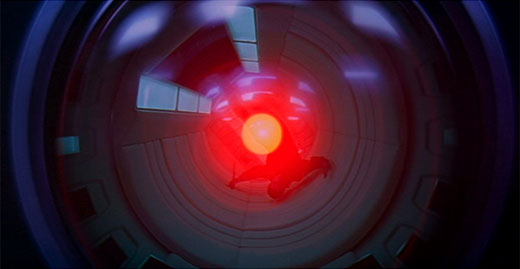

HAL 9000

HAL (Heuristically programmed ALgorithmic Computer) 9000 is an
artificial intelligence computer which controls the functions of
the Discovery One spacecraft. HAL is a very malicious computer who attempts to kill all of the Discovery One's crew after learning of their plot to disconnect HAL from it's cognitive database. The crew's plan to disconnect HAL is foley, and many astronauts lose their lives to this corrupt computer.
HAL 9000 appears in Stanley Kubrick's 2001: A Space
Odyssey, originally based off of Arthur C. Clarke's Space Odyssey
series. Kubrick's re-creation of HAL is regarded as one of the greatest
film villians of all time.